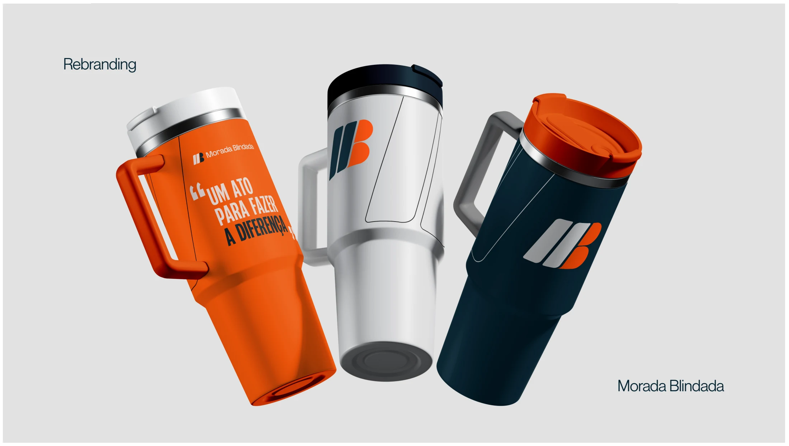

Morada Blindada
2024
Uma nova expressão para o cuidado. Tradição e proximidade em uma identidade preparada para uma nova fase.
- Projeto
- Rebranding
- Cliente
- Morada Blindada
- Ano
- 2024
- Categorias
- Identidade Visual
- Atuação
- Conceito e redesign da identidade visual
Evoluir sem perder a essência
O rebranding da Morada Blindada aproxima a identidade visual do momento de uma empresa de serviços condominiais com uma trajetória consolidada. O conceito parte do cuidado traduzido em atos de serviço, equilibrando maturidade, confiança e energia para seguir em frente.
Reconhecimento em cada contato
A assinatura valoriza o nome Morada Blindada e preserva a sigla MB como elemento de reconhecimento. O símbolo, a paleta em azul e laranja e as aplicações em uniformes, veículos e comunicação formam uma linguagem coesa para representar a marca nos espaços em que ela atua.